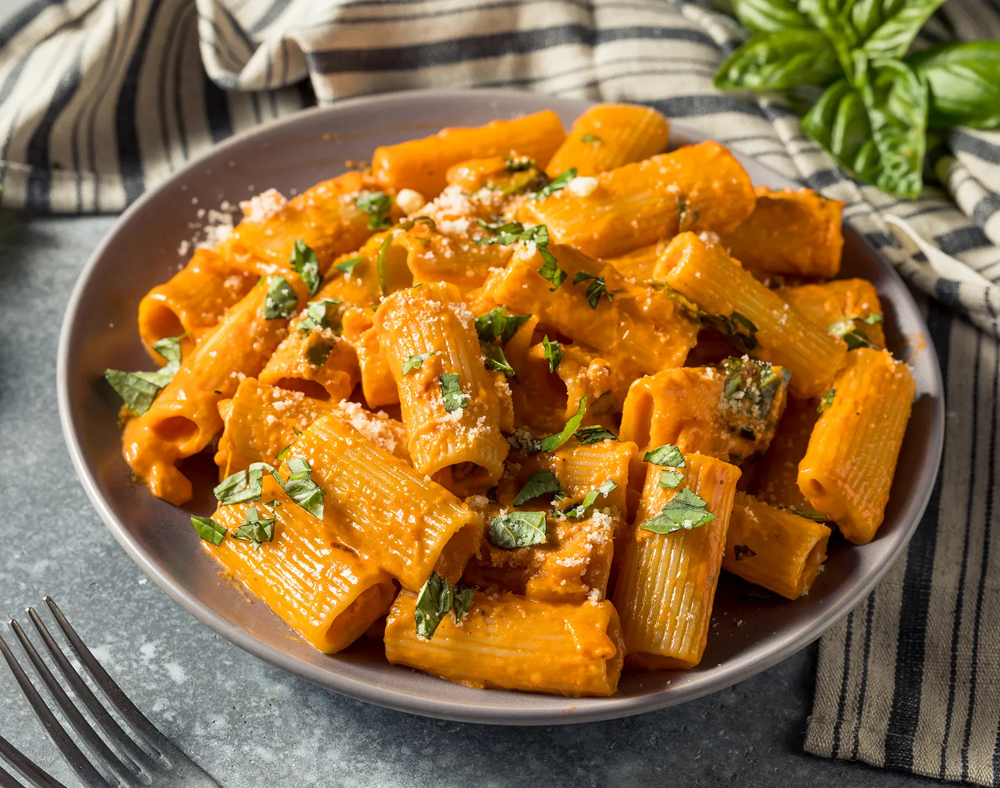

Recipe Book Website
Pasta

Pasta is a type of food typically made from an unleavened dough of wheat flour mixed with water or eggs,
and formed into sheets or other shapes, then cooked by boiling or baking.
Recipe:
Ingredients:
- 350g (12 oz) spaghetti or other long pasta
- 150g (5 oz) pancetta or guanciale, diced (you can also use bacon as a substitute)
- 3 large eggs
- 100g (about 1 cup) grated Pecorino Romano cheese (or Parmesan cheese), plus extra for serving
- Freshly ground black pepper
- Salt (for pasta water)
- Fresh parsley, chopped (optional, for garnish)
Instructions:
1. Cook the Pasta:
- Bring a large pot of salted water to a boil. Add the spaghetti and cook according to the package
instructions until al dente (usually about 8-10 minutes).
2. Prepare the Sauce:
- While the pasta is cooking, heat a large skillet over medium heat. Add the diced pancetta (or bacon) and
cook until it becomes crispy and golden brown, about 5-7 minutes. Remove from heat and set aside.
3. Make the Carbonara Sauce:
- In a bowl, whisk together the eggs, grated Pecorino Romano cheese, and a generous amount of freshly ground
black pepper. Mix until well combined.
4. Combine Pasta and Sauce:
- Once the pasta is cooked al dente, reserve about 1 cup of pasta cooking water, then drain the pasta.
- Immediately add the hot drained pasta to the skillet with the cooked pancetta (or bacon). Toss well to
combine and evenly distribute the pancetta throughout the pasta.
5. Add the Sauce:
- Quickly pour the egg and cheese mixture over the hot pasta while tossing continuously. The heat from the
pasta will cook the eggs, creating a creamy sauce. If the sauce seems too thick, add a little pasta cooking
water gradually to loosen it up.
6. Serve:
- Divide the Spaghetti Carbonara among serving plates.
- Sprinkle with extra grated Pecorino Romano cheese and freshly ground black pepper.
- Garnish with chopped fresh parsley if desired.
- Serve immediately while hot and enjoy your delicious homemade Spaghetti Carbonara!
This recipe serves 4 and can be easily adjusted to suit your taste preferences. It's a comforting and flavorful
dish that is perfect for a cozy dinner at home. Buon appetito!
Lasagna

Lasagna, also known as lasagne, is a type of pasta, possibly one of the oldest types, made in very wide, flat
sheets. The same-named Italian dish is made of stacked layers of lasagna alternating with fillings such as ragù,
béchamel sauce, vegetables, cheeses, and seasonings and spices.
Recipe:
Ingredients:
For the Meat Sauce:
- 500g (1 lb) ground beef or a mixture of beef and pork
- 1 onion, finely chopped
- 2 cloves garlic, minced
- 1 carrot, finely chopped
- 1 celery stalk, finely chopped
- 800g (28 oz) canned crushed tomatoes
- 1/2 cup red wine (optional)
- 1/2 cup beef or chicken broth
- 2 tablespoons tomato paste
- 1 teaspoon dried oregano
- 1 teaspoon dried basil
- Salt and pepper to taste
- 2 tablespoons olive oil
For the Béchamel Sauce:
- 50g (3.5 tablespoons) butter
- 50g (1/3 cup) all-purpose flour
- 500ml (2 cups) milk
- Pinch of nutmeg
- Salt and pepper to taste
Other Ingredients:
- 250g (9 oz) lasagna noodles (about 12 noodles), parboiled according to package instructions
- 250g (9 oz) mozzarella cheese, shredded
- 100g (1 cup) Parmesan cheese, grated
Instructions:
1. Prepare the Meat Sauce:
- Heat olive oil in a large skillet or pot over medium heat. Add chopped onions, garlic, carrot, and celery.
Cook until softened, about 5-7 minutes.
- Add ground beef (or beef/pork mixture) to the skillet. Cook until browned, breaking up any large chunks with
a spoon.
- Stir in tomato paste and cook for 1-2 minutes until fragrant.
- Pour in red wine (if using) and cook for a few minutes until it reduces slightly.
- Add crushed tomatoes, beef or chicken broth, dried oregano, dried basil, salt, and pepper. Bring to a simmer
and cook uncovered for about 30-40 minutes, stirring occasionally, until the sauce thickens. Adjust
seasoning if needed. Remove from heat and set aside.
2. Prepare the Béchamel Sauce:
- In a medium saucepan, melt butter over medium heat.
- Add flour and whisk continuously for 1-2 minutes to make a roux (a thick paste).
- Gradually whisk in milk, a little at a time, until smooth and combined.
- Cook the sauce, stirring constantly, until it thickens enough to coat the back of a spoon.
- Season with salt, pepper, and a pinch of nutmeg. Remove from heat and set aside.
3. Assemble the Lasagna:
- Preheat your oven to 180°C (350°F).
- Spread a thin layer of meat sauce on the bottom of a 9x13-inch baking dish.
- Arrange a layer of parboiled lasagna noodles on top of the sauce.
- Spread about one-third of the remaining meat sauce over the noodles.
- Spoon one-third of the béchamel sauce over the meat sauce.
- Sprinkle with a handful of shredded mozzarella cheese and grated Parmesan cheese.
- Repeat the layers: noodles, meat sauce, béchamel sauce, and cheeses. You should have enough ingredients for
3 layers, ending with a layer of béchamel sauce and cheeses on top.
4. Bake the Lasagna:
- Cover the baking dish with aluminum foil, tenting it slightly to prevent the cheese from sticking.
- Bake in the preheated oven for 30 minutes.
- Remove the foil and continue baking for another 15-20 minutes, or until the top is golden brown and bubbly.
- Remove from the oven and let the lasagna rest for 10 minutes before slicing and serving.
5. Serve:
- Garnish with fresh basil or parsley if desired.
- Slice into portions and serve hot. Enjoy your delicious homemade Italian Lasagna!
This recipe serves about 8-10 people, making it perfect for family gatherings or potluck dinners. Lasagna also
reheats well, so leftovers are always a treat!